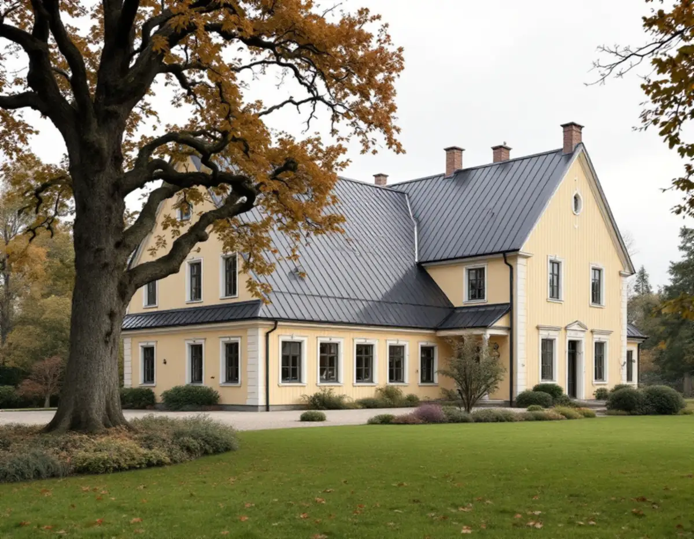
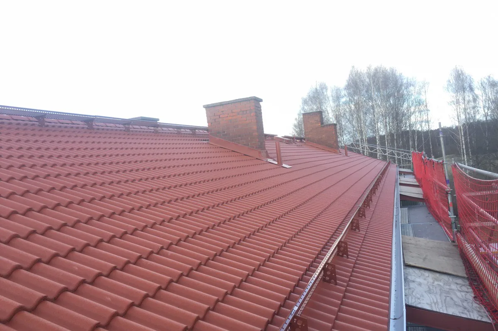

Vattnets väg
Vi följer vattnet från nock till mark: beslag, ränndalar, rännor, stuprör och vart utkastaren leder.
Det mesta regnet som faller på en villa i Danderyd passerar plåt på vägen ner: nockbeslag, ränndalar, hängrännor och stuprör. Var vattnet sedan tar vägen, och vilken metall det har runnit över, är frågor som kommunen har tydliga synpunkter på. Geal Entreprenad AB har egna plåtslagare som arbetar i Djursholm, Stocksund, Enebyberg och övriga Danderyd, med gratis platsbesök och skriftligt kostnadsförslag.

I kommunens VA-folder från hösten 2022, Så sköter du dina egna VA-ledningar, står det rakt ut: takvatten från stuprör får inte ledas till spillvatten- eller avloppsledningen. Kommunen föreslår i stället att du ordnar plats för dagvattnet på tomten, till exempel genom att bygga en stenkista eller låta vattnet rinna ner i regntunnor.
Samma checklista uppmanar villaägare att rensa brunnar och hängrännor för att undvika stora vattensamlingar runt huset. Det är där plåtslagarens arbete och tomtens dränering möts. En ränna som lutar fel, ett skarvat stuprör som läcker eller en utkastare som slutar precis vid sockeln gör att vattnet hamnar på fel ställe även om resten av systemet är rätt byggt.
Vid ett besök följer vi därför vattnet hela vägen: från takfoten, genom rännan och stupröret, ner till marken. Är stupröret i dag anslutet till en ledning i marken frågar vi vart den går. Är du osäker kan kommunens tekniska kontor svara på frågor om anslutningen.

Kommunfullmäktige i Danderyd har antagit en dagvattenplan för 2021–2027. Den ska användas vid all om- och nybyggnation och så långt som möjligt tillämpas på befintliga anläggningar. En av planens tolv målsättningar är att material och ämnen som kan öka spridningen av miljöskadliga ämnen via dagvattnet ska undvikas, och som exempel nämns byggnadsmaterial som koppar och zink vid ny- och tillbyggnation.
För en plåtslagare betyder det att materialvalet blir en fråga redan när en tillbyggnad, en carport eller ett nytt skärmtak planeras. Det finns andra plåtmaterial, till exempel lackerad stålplåt och aluminium, och vi går igenom alternativen innan något beställs. Planen säger också att dagvatten i första hand ska tas om hand lokalt, nära källan, vilket stämmer väl med kommunens råd om stenkista och regntunna.
På ett befintligt hus med kopparbeslag är situationen en annan. Att byta ett skadat beslag mot ett likadant är underhåll. Vill du byta material helt kan det i stället påverka husets utseende, och då kommer kulturmiljöfrågan in.
Boverket skriver att det inte krävs bygglov för att byta taktäckningsmaterial på ett småhus, och att det med byte menas ett tak som ser annorlunda ut eller är av annat material. Innan taket byts behöver du kontrollera att det klarar den nya belastningen. Ändringen ska ändå göras varsamt och anpassas till omgivningen.
Danderyds kommun påpekar att lovplikten är kvar i de känsliga områdena. Inom kulturhistoriskt särskilt värdefulla områden och inom riksintressen för kulturmiljövården krävs bygglov för fasadändringar som nytt tak, och det gäller även om byggnaden i sig är särskilt värdefull. Om fastigheten berörs syns i kommunens kulturmiljökarta, och den som vill ha ett formellt besked kan söka frivilligt bygglov.
Ska plåttaket bytas helt finns mer under takbyte i Danderyd. Gäller det bara beslag, rännor och bleck kan arbetet oftast planeras utan kontakt med kommunen, men vi tittar på kartan innan kulör eller profil ändras.
Enligt kommunens frågor och svar om de nya reglerna krävs bygglov om ett en- eller tvåbostadshus byggs till med mer än sammantaget 30 kvadratmeter, och då räknas tidigare utförda skärmtak och attefallstillbyggnader in. Kommunen påminner också om att den som ökar bruttoarean utan lov själv ska informera kommunens VA-enhet.
Ett nytt skärmtak över entrén eller altanen behöver en avslutning mot husväggen och oftast en egen ränna, och många får ett litet plåttak. Boverket pekar på att påbyggnader som ökar vattenbelastningen jämfört med vad avvattningen var byggd för kan göra att systemet inte räcker till. När en tillbyggnad leder sitt vatten till en befintlig ränna kontrollerar vi därför att rännan och stupröret klarar mängden.
Läs mer om rännor och stuprör i allmänhet under hängrännor och stuprör.
Vi följer vattnet från nock till mark: beslag, ränndalar, rännor, stuprör och vart utkastaren leder.
Kulturmiljökartan och detaljplanen kontrolleras innan material eller kulör ändras.
Vid tillbyggnad väljer vi tillsammans plåt i linje med kommunens dagvattenplan.
Rännor, stuprör, beslag och eventuellt nytt skärmtak prissätts var för sig.
Gammal plåt demonteras, underlaget kontrolleras och ny plåt monteras med rätt fall.
Vid genomgången visar vi hur vattnet leds bort och var det tas om hand på tomten.
Skatteverket räknar det som rotarbete i ett småhus att reparera, rengöra eller byta ut plåttak, hängrännor och stuprör, och att montera och montera ner byggnadsställningar i samband med rotarbetet.
Avdraget är högst 30 procent av arbetskostnaden och högst 50 000 kr per person och år, inom 75 000 kr för rot och rut tillsammans. Plåt och resor ger inget avdrag. Geal drar avdraget direkt på fakturan.
Hur långa rännorna är, hur många stuprör och ränndalar huset har, valet av material och kulör, om tillbyggnadens avvattning ska kopplas till befintliga rännor och vilken ställning som behövs på en hög villa. Du får ett skriftligt kostnadsförslag efter ett gratis platsbesök.
Plåttak, hängrännor och beslag.
Plåtslagare i Stockholm →Takbyte, takbesiktning och plåtarbeten.
Takläggare i Danderyd →Djursholm, Stocksund och Enebyberg.
Takrenovering i Danderyd →Villastäder, lovplikt och strandskydd.
Attefallshus i Danderyd →Tillbyggnad, tomt och kommunens riktlinjer.
Byggföretag i Danderyd →Kalkfärg på puts, linoljefärg på trä.
Fasadmålning i Danderyd →Villastäder, egnahem och grupphus i Danderyd.
Fasadrenovering i Danderyd →Lovplikt, klassning och spröjs i Danderyd.
Fönsterbyte i Danderyd →Varsamt underhåll av villafönster i Djursholm.
Fönsterrenovering i Danderyd →Originalgolv i villor från 1890-talet och framåt.
Golvläggare i Danderyd →Slipa parkett och mönstergolv i villan.
Golvslipning i Danderyd →Villastäder, ritningar och ventilation.
Badrumsrenovering i Danderyd →Villastäder, egnahem och kommunens regler.
Köksrenovering i Danderyd →Villor, egnahem och grupphus i Danderyd.
Målare i Danderyd →Altaner, staket och carport.
Snickare i Danderyd →Villastaden, takmaterial och solceller.
Takbyte i Danderyd →Tapet och papptak i äldre villor.
Tapetsering i Danderyd →Funkis, grupphus och 1950-talsvillor.
Tillbyggnad i Danderyd →